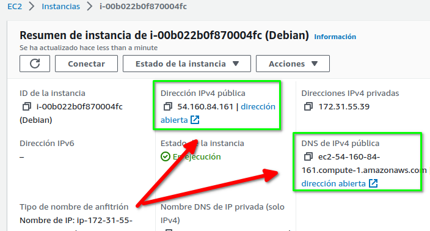
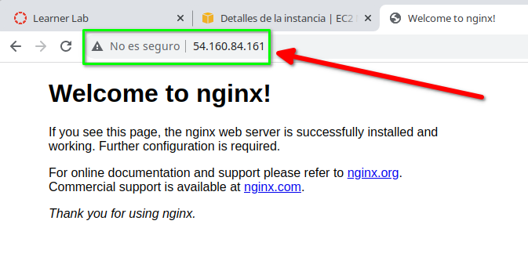
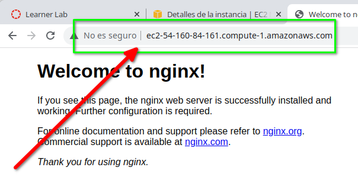

AWS, EC2 y Docker¶
Se supone una instancia EC2 funcionando (ver prácticas previas) accesible mediante conexión ssh.
1. Instalar Docker en EC2¶
La instalación de Docker en la instancia EC2 dependerá del Sistema Operativo. Puede usar el script que facilitan desde Docker. En este ejemplo se usa una instancia Debian:
admin@ip-172-31-55-39:~$ curl -fsSL https://get.docker.com -o get-docker.sh
...
admin@ip-172-31-55-39:~$ sudo sh get-docker.sh
# Executing docker install script, commit: 66474034547a96caa0a25be56051ff8b726a1b28
...
admin@ip-172-31-55-39:~$
1.1. Post-instalación¶
Continue la instalación añadiendo el usuario de la instancia (admin en debian) al grupo docker y cerrando la conexión para que se reflejen los cambios (o ejecutar el comando newgrp docker).
admin@ip-172-31-55-39:~$sudo groupadd docker
groupadd: group 'docker' already exists
admin@ip-172-31-55-39:~$ sudo usermod -aG docker $USER
admin@ip-172-31-55-39:~$ newgrp docker
admin@ip-172-31-55-39:~$
1.2. Prueba¶
Y pruebe el comando docker:
admin@ip-172-31-55-39:~$ docker run hello-world
Unable to find image 'hello-world:latest' locally
latest: Pulling from library/hello-world
2db29710123e: Pull complete
...
Hello from Docker!
...
For more examples and ideas, visit:
https://docs.docker.com/get-started/
admin@ip-172-31-55-39:~$
2. Instalación con script o desde plantilla¶
Es posible ejecutar un script al lanzar la instancia EC2, en el apartado "Detalles Avanzados". En ese apartado tiene la opción de incluir "Datos de usuario". Incluso puede crear previamente una plantilla de lanzamiento con dicho script.
En el caso de la instalación de docker en debian el script sería similar a
#!/bin/bash
curl -fsSL https://get.docker.com -o get-docker.sh
sudo sh get-docker.sh
sudo groupadd docker
sudo usermod -aG docker admin
3. Desplegar imagen con servidor web¶
Pruebe a lanzar la imagen de un servidor nginx (redireccionando el puerto 80 del host al 80 del contenedor):
admin@ip-172-31-55-39:~$ docker run -d -p 80:80 --name web nginx
...
admin@ip-172-31-55-39:~$
Compruebe que esté funcionando el contenedor:
admin@ip-172-31-55-39:~$ docker ps
CONTAINER ID IMAGE COMMAND CREATED STATUS PORTS NAMES
3113d2a133ac nginx "/docker-entrypoint.…" 51 seconds ago Up 50 seconds 0.0.0.0:80->80/tcp, :::80->80/tcp web
admin@ip-172-31-55-39:~$
Y pruebe el contenedor desde la propia instancia EC2:
admin@ip-172-31-55-39:~$ curl localhost
<!DOCTYPE html>
<html>
<head>
<title>Welcome to nginx!</title>
...
</html>
admin@ip-172-31-55-39:~$
Termine probando el acceso desde el exterior (usando la IP o nombre público de la instancia EC2) con el comando curl o un navegador

- a la IP pública de la instancia:

- al nombre de la misma:

4. Terminar¶
No olvide detener el contenedor (docker rm -f web), y si ha terminado detener (o terminar) la instancia EC2, cerrar la consola AWS y salir del laboratorio.
5. Usando un fichero compose (y scp)¶
En el caso de que la aplicación a desplegar se configure en un fichero compose.yml el proceso sería:
- Copiar el fichero
docker-compose.ymlen la instancia EC2 con el comandoscp - Desplegar con
docker compose up -d - Comprobar el acceso a la aplicación
Este podría ser un ejemplo de un fichero de despliegue docker-compose.yml (en este caso Wordpress)
services:
wordpress:
image: wordpress
restart: always
ports:
- 8080:80
environment:
WORDPRESS_DB_HOST: db
WORDPRESS_DB_USER: exampleuser
WORDPRESS_DB_PASSWORD: examplepass
WORDPRESS_DB_NAME: exampledb
volumes:
- wordpress:/var/www/html
db:
image: mysql:8.0
restart: always
environment:
MYSQL_DATABASE: exampledb
MYSQL_USER: exampleuser
MYSQL_PASSWORD: examplepass
MYSQL_RANDOM_ROOT_PASSWORD: '1'
volumes:
- db:/var/lib/mysql
volumes:
wordpress:
db: